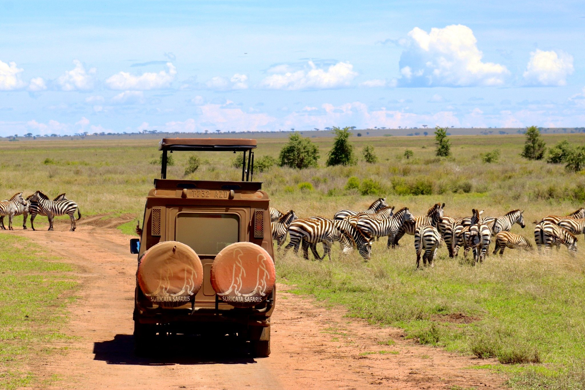
Les premiers départs
Quitter le connu
La Tanzanie, Zanzibar, puis la sensation très particulière de comprendre que le voyage ne faisait que commencer.
Derrière Now or Never
Je m’appelle Charlotte. Et si Now or Never existe aujourd’hui, ce n’est pas parce que j’ai toujours rêvé de créer une entreprise dans le voyage. C’est parce qu’un jour, j’ai décidé de ne plus remettre à plus tard un rêve qui me suivait depuis longtemps.
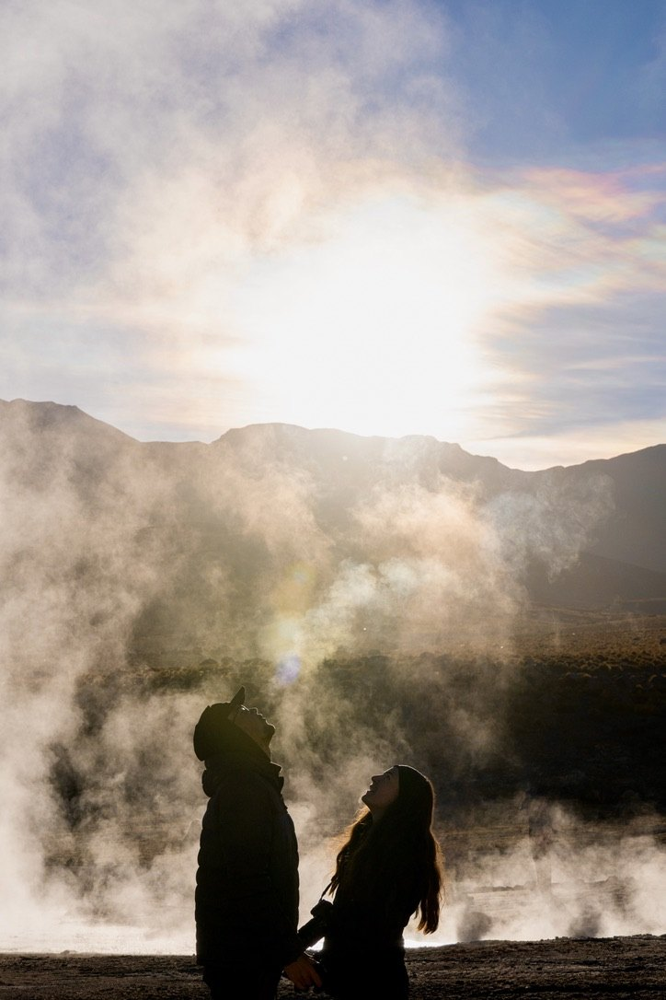
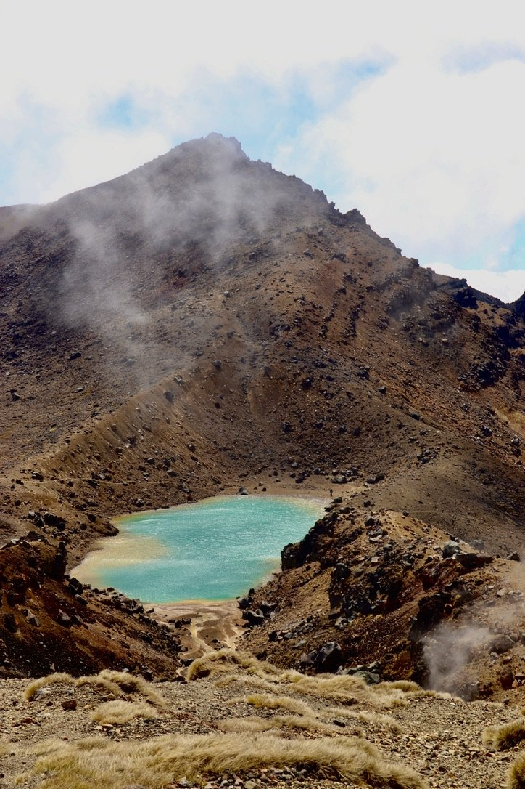
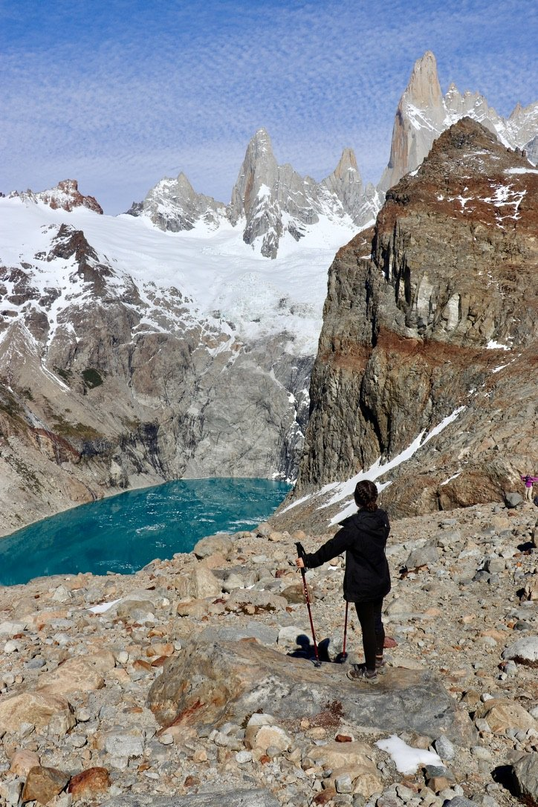
Le point de départ
C’est parti de là.
Comme beaucoup, j’avais une vie construite, des projets, des habitudes et cette liste de choses que l’on fera « un jour ». Parmi elles, il y avait un rêve immense : partir longtemps, découvrir le monde et vivre autrement.
Alors nous avons décidé de faire de ce « un jour » une date. En novembre 2024, nous sommes partis à deux pour un voyage qui allait durer deux ans.
Le voyage
Le tour du monde n’a pas été une succession de cases cochées sur une carte. Il y a eu des routes, des rencontres, des détours, des paysages qui coupent le souffle, des imprévus et des façons de voyager très différentes.

La Tanzanie, Zanzibar, puis la sensation très particulière de comprendre que le voyage ne faisait que commencer.
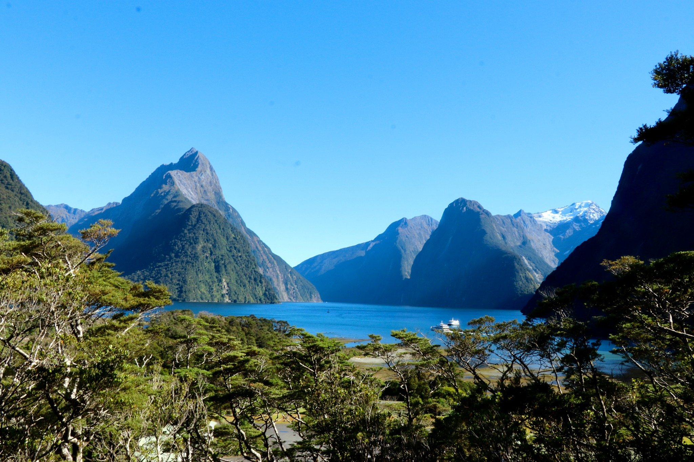
Un van, deux îles et une autre façon de vivre le voyage : plus lente, plus libre, plus proche du quotidien.
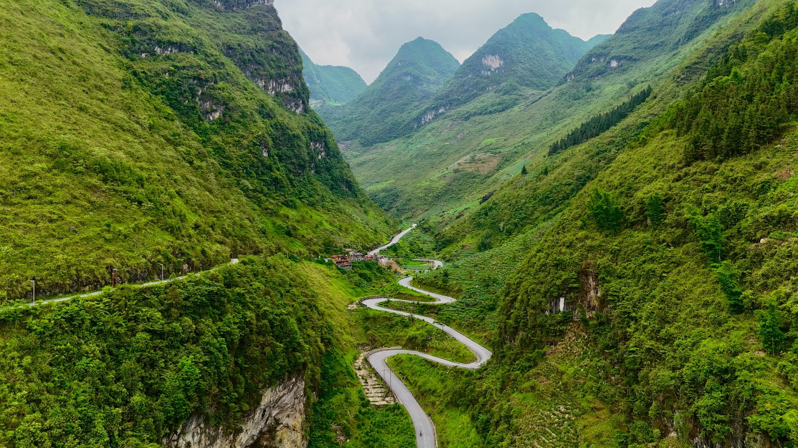
Indonésie, Philippines, Japon, Laos, Vietnam : apprendre à construire chaque voyage différemment selon le pays.
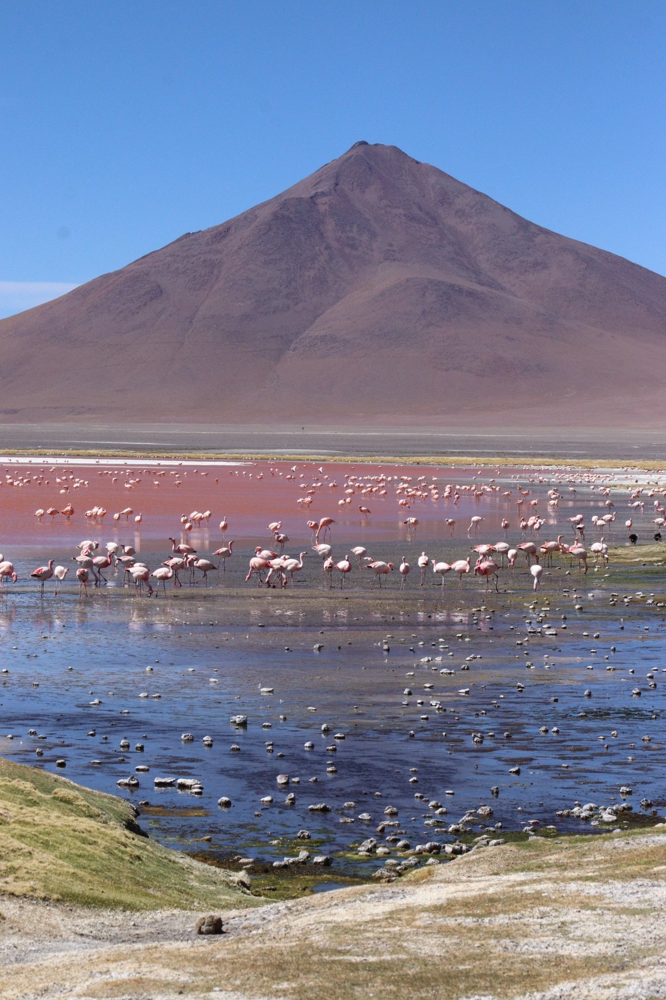
Colombie, Pérou, Bolivie, Chili et Argentine : des paysages immenses et les derniers chapitres d’une aventure devenue notre quotidien.
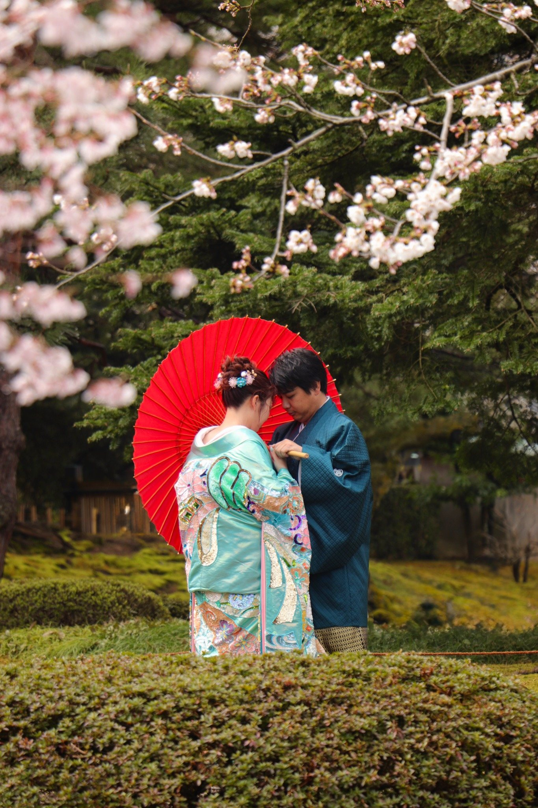
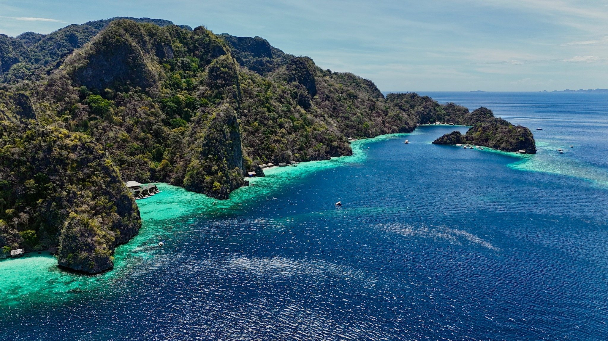
Petit à petit
Pendant le voyage, les demandes de conseils ont commencé naturellement. Un itinéraire à revoir. Une étape à choisir. Une question sur un pays. Une adresse. Une façon d’éviter de perdre une journée entière dans les transports.
Et je pouvais y passer des heures sans les voir passer. Chercher, comparer, comprendre ce qui conviendrait vraiment à la personne en face de moi… J’adorais ça.
Le voyage était une passion. Le concevoir en est devenue une autre.
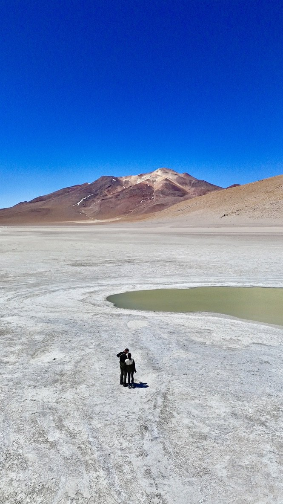
Pourquoi Now or Never ?
Now or Never est né d’une conviction très simple : la vie est trop courte pour attendre le moment parfait pour vivre quelque chose de fort.
Je ne veux pas simplement assembler des hôtels et des activités. Je veux comprendre ce que vous attendez vraiment de ce voyage, puis construire autour de cela un itinéraire cohérent, réaliste et personnel.
Comprendre votre façon de voyager avant de commencer à chercher.
Créer un voyage qui ne pourrait pas simplement être copié collé pour quelqu’un d’autre.
Penser aux détails, aux distances et au rythme pour vous laisser profiter du voyage.
Aujourd’hui
Je suis rentrée avec beaucoup de souvenirs, beaucoup trop de photos et surtout l’envie de donner une suite à tout ce que ces deux années m’ont appris.
Aujourd’hui, je mets cette expérience, ma curiosité et mon goût presque obsessionnel pour l’organisation au service de vos projets. Pas pour décider à votre place, mais pour vous aider à créer un voyage qui vous ressemble vraiment.
Parce que votre grand voyage n’a pas besoin de ressembler au mien pour devenir l’un des souvenirs les plus forts de votre vie.
Charlotte
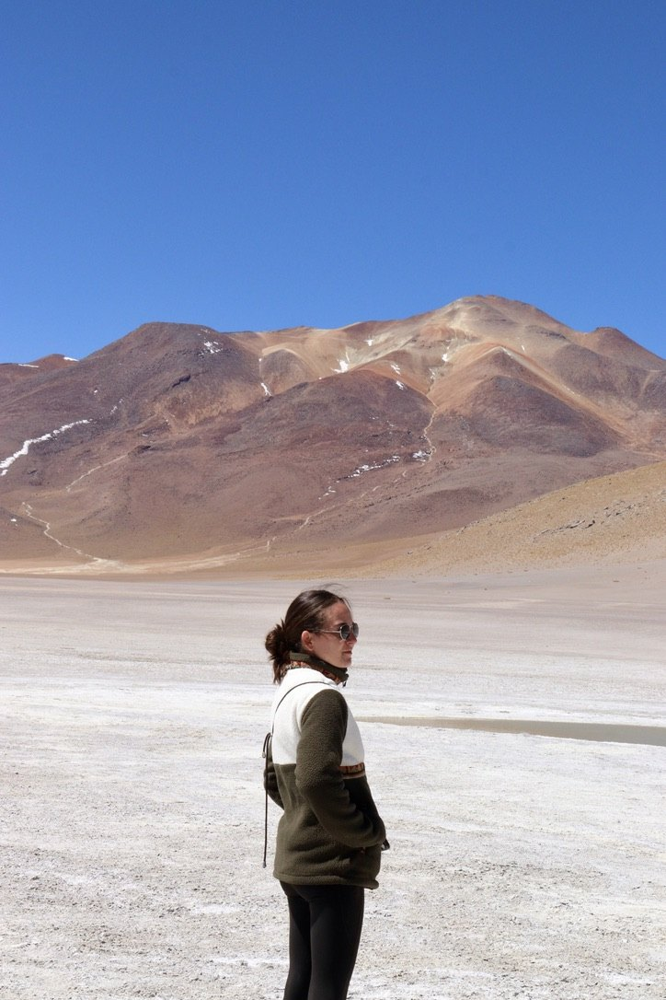
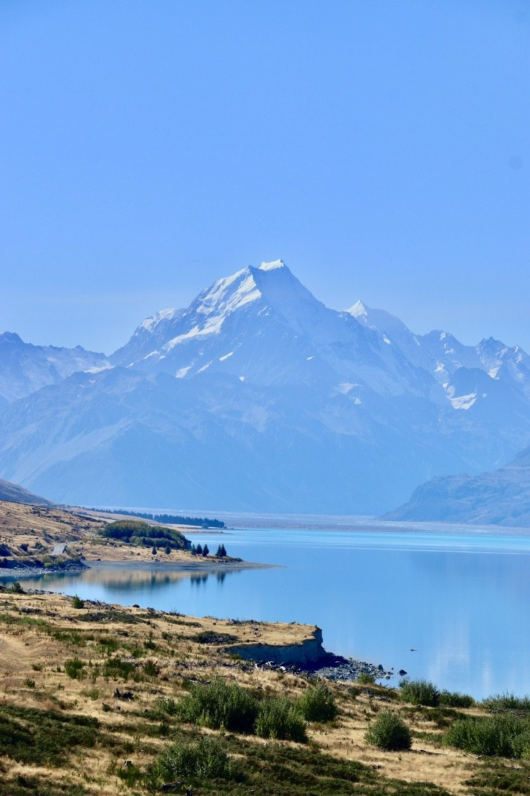
Du vécu aux voyages des autres
« Charlotte sait dire ce qui vaut le coût ou au contraire proposer des versions moins chères, voire gratuites. »Nouvelle-Zélande · Avis Google
Et votre histoire ?
Parlez-moi de ce que vous avez en tête. Même si ce n’est encore qu’une destination, une envie ou un rêve un peu flou.
Créons votre voyage →